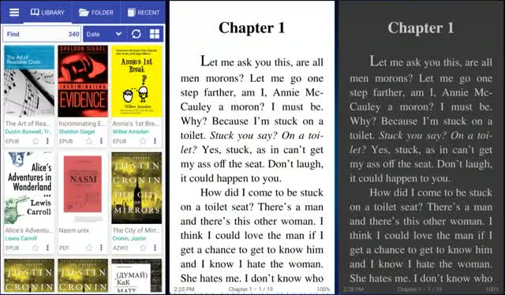
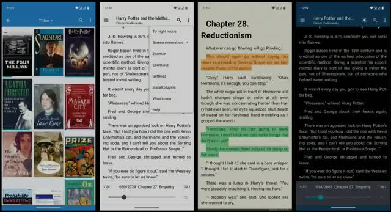
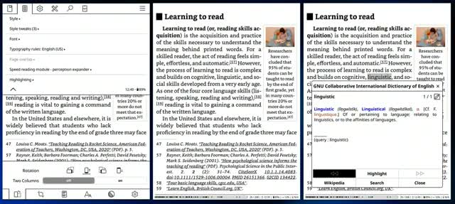
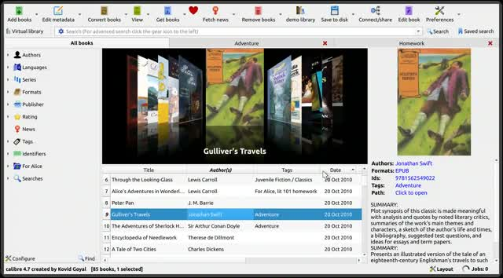
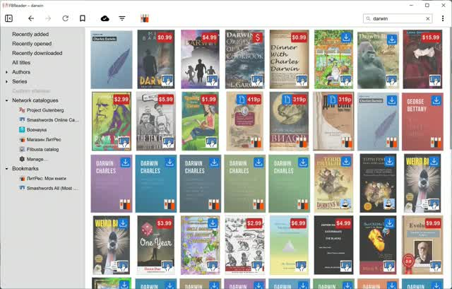

Un libro impreso consume madera, agua, energia, tintas y transporte. Un archivo digital se copia infinitas veces sin talar un solo arbol.
Aunque el dispositivo tambien tiene huella, por eso lo mas ecologico es leer en algo que ya tenes y no comprar uno nuevo solo para eso.
Librera Reader:
Lector Minimalista Extremo para los que gusten

FBReader:
Otra buena alternativa que ademas es compatible con PCs, Windows, Mac, Linux.

KOReader:
Es en caso de que tengas lectores con pantalla de Tinta, su UI esta adaptada a eso.


Pasar a Descargar Aqui ⬇️
o el que ya mencionamos antes pero para PC

| EPUB | ||
|---|---|---|
| Diseno | Fijo, como una pagina impresa | Fluido, se adapta a la pantalla |
| Lectura en celular | Incomoda, mucho zoom | Comoda, texto reajustable |
| Tipografia y tamano | No cambian | Los elegis vos |
| Ideal para | Papers, manuales, planos | Novelas, ensayos, lectura larga |
EPUB es un estandar abierto mantenido por el W3C. Es como una pagina web hecha PDF
Es la misma filosofia del codigo libre: el conocimiento no deberia quedar encerrado en formatos que controla alguien mas.
No sabes que es el Codigo Libre? Pasa a leer ➡️ Aqui
| Formato | Para que sirve | Ventajas | Desventajas | Abierto |
|---|---|---|---|---|
| Papers, manuales, revistas, libros con diseno fijo | Se ve igual en todos lados | Incomodo en celular, texto no se reajusta | Si | |
| EPUB | Novelas, ensayos, lectura larga | Texto fluido, fuente y tamano ajustables, liviano | Diseno complejo puede fallar | Si |
| CBZ | Comics y manga | Simple, universal, facil de crear | Solo imagenes, sin texto seleccionable | Si |
| CBR | Comics y manga | Igual que CBZ | RAR es formato cerrado, CBZ es preferible | Parcial |
| MOBI | Formato antiguo de Kindle | No hay Beneficio Real | Obsoleto, Amazon mato esos libros. | No |
| AZW3 / KFX | Libros comprados en Kindle | No hay Beneficio Real | Con DRM solo funcionan en Kindle | No |
| FB2 | Ficcion formato europeo | XML ligero | Poco conocido fuera de su region | Si |
| TXT | Texto plano | Pesa casi nada, abre en todo | Sin formato, sin portada, sin imagenes | Si |
| DJVU | Libros escaneados, archivos historicos | Comprime mucho las paginas escaneadas | Cada vez menos usado | Si |
Leer en digital reduce el consumo de papel, y elegir EPUB con apps libres te devuelve el control sobre tu biblioteca. Menos arboles talados, menos dependencia, mas libertad para leer.
Pero ahora, de donde rayos conseguimos los libros?.. Existe una tal “Annas Archive” puedes buscarlo en internet.